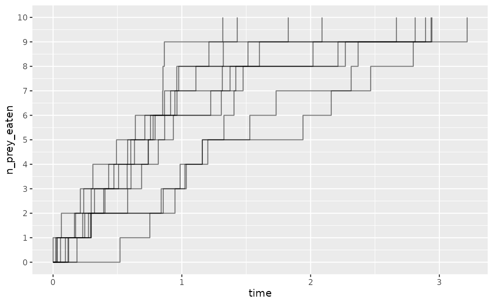
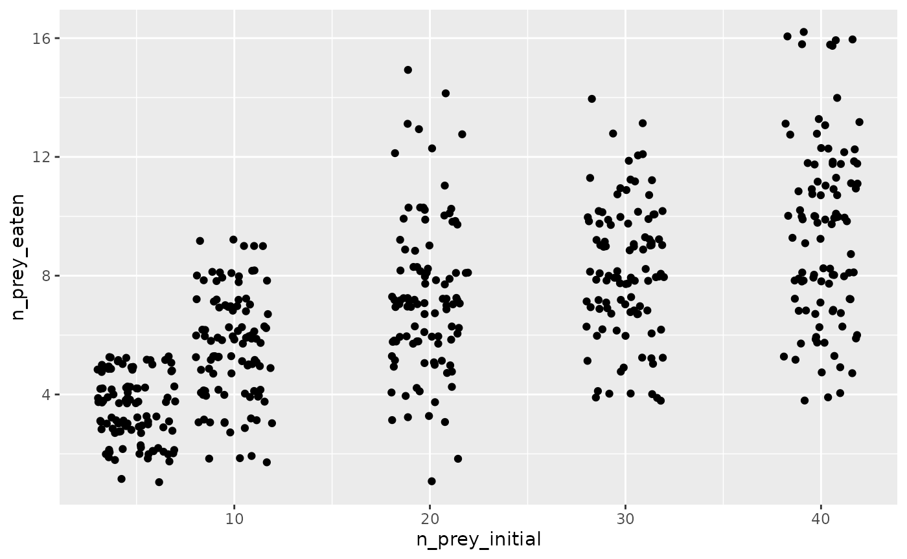

Introduction to frbayes
introduction_to_frbayes.Rmd
library(frbayes)
#>
#> Attaching package: 'frbayes'
#> The following object is masked from 'package:stats':
#>
#> simulate
library(ggplot2)
library(purrr)
library(dplyr)
#>
#> Attaching package: 'dplyr'
#> The following objects are masked from 'package:stats':
#>
#> filter, lag
#> The following objects are masked from 'package:base':
#>
#> intersect, setdiff, setequal, union
library(tidyr)In this vignette, we provide an introduction to frbayes,
a package for fitting to functional response data.
Synthetic study
We first show how we can fit a functional response model to synthetically generated data, where the parameters of the process are known. We assume that data generating process is a stochastic Rogers-II-type model, where the process is assumed to follow a chemical reaction equation of the form:
where the rate of this reaction is given by:
where is a capture rate and is a handling time. Here, we assume in our synthetic data that and .
We suppose that 100 replicates were performed at initial prey counts of: 5, 10, 20, 30, 40, and we generate a possible observed dataset for this experimental setup.
# experiment details
experimental_setup <- data.frame(
n_prey_initial = c(5, 10, 20, 30, 40),
n_replicates = 100
)
# generate synthetic data
true_parameters <- list(a=2, h=0.1)
df <- simulate_study(
data=experimental_setup,
time_max = 1,
model = model_rogersII(),
parameters = true_parameters
)
# plot data
df %>%
ggplot(aes(x=n_prey_initial, y=n_prey_eaten)) +
geom_jitter(height = 0.3)We now fit a model to these data using maximum likelihood estimation.
To do so, we use the log_probability function. We first
show how the log-likelihood varies as
is varied with
fixed at its true value.
as <- seq(1, 4, 0.1)
log_likelihood <- vector(length = length(as))
for(i in seq_along(as)) {
parameters <- list(a = as[i], h = true_parameters$h)
log_likelihood[i] <- log_probability(
parameters = parameters,
data = df,
model = model_rogersII(),
n_replicates = 10000)
}
# plot
tibble(a=as, log_likelihood=log_likelihood) %>%
ggplot(aes(x=a, y=log_likelihood)) +
geom_line() +
geom_vline(xintercept = true_parameters$a, linetype=2)
Similarly so, for .
hs <- seq(0.01, 0.25, 0.01)
log_likelihood <- vector(length = length(hs))
for(i in seq_along(hs)) {
parameters <- list(a = true_parameters$a, h=hs[i])
log_likelihood[i] <- log_probability(
parameters = parameters,
data = df,
model = model_rogersII(),
n_replicates = 10000)
}
# plot
tibble(h=hs, log_likelihood=log_likelihood) %>%
ggplot(aes(x=h, y=log_likelihood)) +
geom_line() +
geom_vline(xintercept = true_parameters$h, linetype=2)We can also look at the 2D likelihood surface. Here, we mark the true parameter set as a point.
parameter_combinations <- expand_grid(a=as, h=hs)
parameter_combinations$z <- NA
for(i in seq_along(parameter_combinations$a)) {
parameters <- list(a = parameter_combinations$a[i],
h = parameter_combinations$h[i])
z <- log_probability(
parameters = parameters,
data = df,
model = model_rogersII(),
n_replicates = 1000) # smaller sample
parameter_combinations$z[i] <- z
}
# plot
ggplot(parameter_combinations, aes(x = a, y = h, fill = z)) +
geom_raster() +
scale_fill_viridis_c() + # Using continuous viridis color scale
theme_minimal() +
geom_point(data=data.frame(h=true_parameters$h, a=true_parameters$a)) +
geom_contour(aes(z = z), color = "white")
#> Warning: The following aesthetics were dropped during statistical transformation: fill.
#> ℹ This can happen when ggplot fails to infer the correct grouping structure in
#> the data.
#> ℹ Did you forget to specify a `group` aesthetic or to convert a numerical
#> variable into a factor?